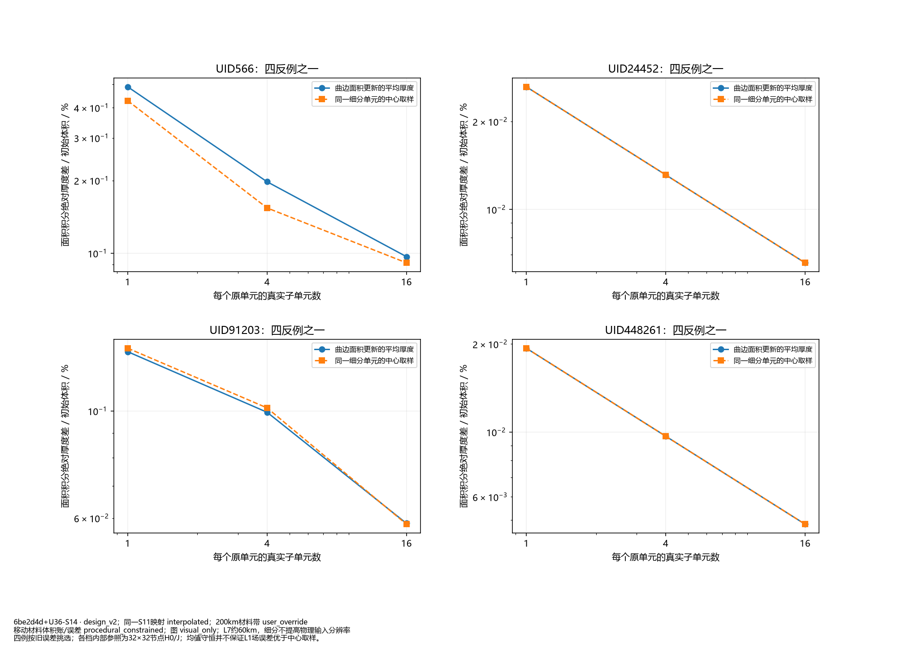
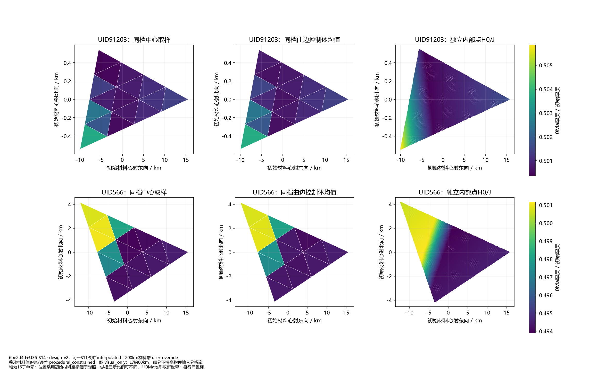
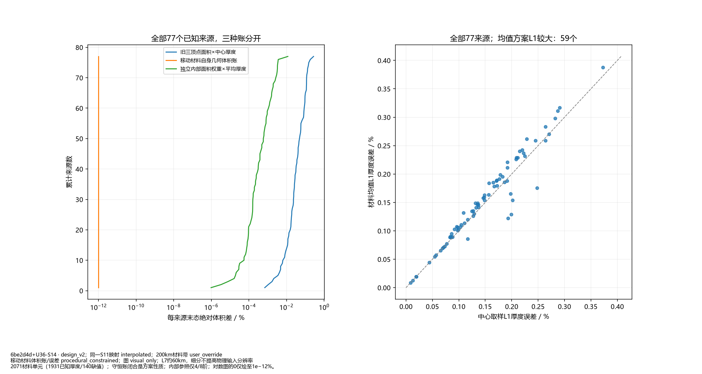
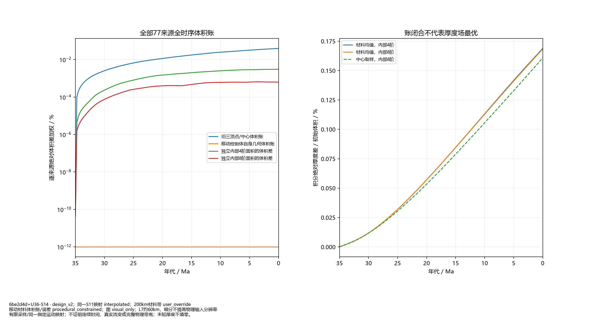

方法小试；默认C2，未接全球/B5，阶段1未通过。

四例按旧误差挑选；各档内部参照为32×32节点H0/J；均值守恒并不保证L1场误差优于中心取样。

均为16子单元；位置采用初始材料坐标便于对照，纵横显示比例可不同，非0Ma地形或新世界；每行同色标。

2071材料单元（1931已知厚度/140缺值）；守恒账闭合是方案性质；内部参照仅4/8阶；对数图的0仅绘至1e−12%。

有限采样/同一指定运动映射；不证明连续时间、真实流变或完整物理带宽；未知厚度不填零。